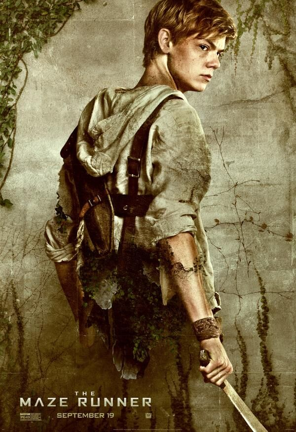
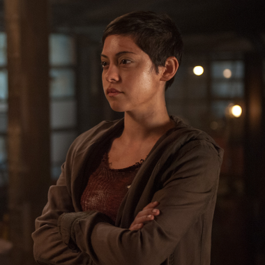
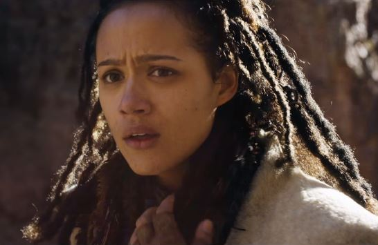
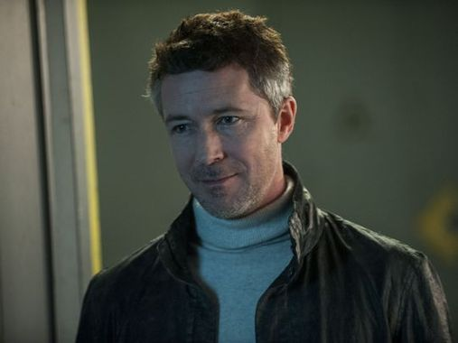
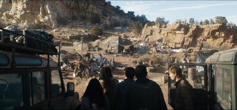

Présentation
Le Labyrinthe: Le Remède mortel ou Maze Runner: The Death Cure est un film américain de science-fiction et d'aventure réalisé par Wes Ball. Le film est sorti en 2018. Il s'agit de l'adaptation du troisième tome de L'Épreuve de James Dashner et la suite des films Le Labyrinthe et Le Labyrinthe: La Terre brulée
Synopsis
Dans ce dernier volet de l’épopée, Thomas et les Blocards s’engagent dans une ultime mission, plus dangereuse que jamais. Afin de sauver leurs amis, ils devront pénétrer dans la légendaire et sinueuse Dernière Ville contrôlée par la terrible organisation WICKED. Une cité qui pourrait s’avérer être le plus redoutable des labyrinthes. Seuls les Blocards qui parviendront à en sortir vivants auront une chance d’obtenir les réponses tant recherchées depuis leur réveil au cœur du Labyrinthe.
Résumé
Thomas, Newt et Siggy sont les derniers blocards immunisés contre le virus Braise qui a ravagé la population mondiale. Les trois quittent leur camp pour sauver leur ami immunisé Minho, qui est torturé par l'organisation WICKED dans l'espoir de développer un remède contre le virus. En direction de "La Dernière Ville", où se trouve le siège de WICKED, le groupe est attaqué par des Fondus. Cependant, ils sont sauvés par Jorge et Brenda, qui les rejoignent. Le groupe arrive au mur de la Dernière Ville, qui protège la ville des Fondus. Lorsque le WICKED ouvre le feu, le groupe est capturé par des hommes masqués et emmené dans une cachette. L'un des hommes masqués se révèle être Gally, qui a survécu à l'attaque de Minho à la fin du Labyrinthe. Gally les emmène voir Lawrence, le chef de la rébellion pour ceux qui sont à l'extérieur des murs, qui leur accorde la permission d'entrer dans la dernière ville par une entrée secrète.
Gally emmène Thomas et Newt dans la ville et, en repérant Teresa, Gally dit à Thomas qu'elle peut les emmener au quartier général de la WICKED. Les trois la capturent et elle accepte de les aider. Thomas, Newt et Gally escortent Teresa vers l'emplacement des Immunes. Ils sont capturés et poursuivis par Janson. Teresa les laisse s'échapper pour trouver Minho, avant de se précipiter pour faire un test sanguin sur le sang de Thomas, qu'elle a obtenu en enlevant les pisteurs des blocards. Gally vole le sérum et retourne dehors dans un bus où Brenda l'attend. Alors que Gally retourne au siège de la WICKED pour trouver Thomas, Brenda est obligée de partir alors que WICKED se rapprochent d'eux. Thomas et Newt retrouvent Minho dans l'aile médicale. Janson les poursuis toujours. Teresa découvre que le sang de Thomas peut guérir la Braise. Elle partage sa découverte avec Ava Paige, toutes deux convenant qu'ils doivent trouver Thomas.
Brenda est acculée par les autorités mais est sauvée par Fry. Pendant ce temps, Lawrence rallie ses rebelles à l'extérieur de la ville avant de faire un trou dans le mur, permettant à ses alliés et aux personnes infectées d'attaquer la ville. En dehors du siège social, Gally trouve Thomas, Minho et Newt. En envoyant Minho et Gally en avant, Newt donne à Thomas un collier avec un pendentif cylindrique en argent. Teresa transmet sa voix dans toute la ville, disant à Thomas que son sang peut sauver Newt s'il retourne la voir. Newt, presque entièrement consumé, reprend conscience et attaque Thomas, tout en suppliant Thomas de le tuer. Resté sans autre option, Thomas tue Newt.
Thomas revient à WICKED et confronte Ava Paige, qui souligne que les intentions de WICKED sont bonnes. Cependant, elle est tuée par Janson, qui se transforme petit-à-petit en fondu. Après un combat, Janson est tué, permettant à Thomas et Teresa de s'échapper sur le toit via un avion piloté par Jorge et Vince. Ils prennent Thomas à bord, mais Teresa est tuée lorsque le quartier général s'effondre après avoir été heurté par l'effondrement d'un bâtiment en raison des attaques des rebelles. Le groupe se réunit avec le reste des Immunes et le Bras droit et s'échappent dans un refuge qui a été révélé par Ava Paige, où la population restante pourrait vivre en sécurité. Là, Thomas découvre que le pendentif que Newt lui a donné contient une lettre. Encore traumatisé par la mort de Teresa, il lit la lettre, dans laquelle Newt lui dit de s'occuper de lui-même et de tout le monde, avant de remercier Thomas d'être son ami.
Casting
| Nom de l'acteur | Rôle dans le film |
|---|---|
| Dylan O'Brien | Thomas |
| Kaya Scodelario | Teresa |
| Thomas Brodie-Sangster | Newt |
| Will Poulter | Gally |
| Ki Hong Lee | Minho |
| Dexter Darden | Siggy |
| Rosa Salazar | Brenda |
| Giancarlo Esposito | Jorge |
| Barry Pepper | Vince |
| Katherine McNamara | Sonya |
| Nathalie Emmanuel | Harriet |
| Aidan Gillen | Janson |
| Patricia Clarkson | Ava Paige |
Descriptif
Thomas

Thomas, auparavant Stephen, est un ancien Blocard du groupe A et un des créateurs du Labyrinthe, tout comme Teresa. Son nom lui a été donné par les créateurs en honneur à Thomas Edison.
Teresa

Teresa, auparavant Deedee, est une ancienne Blocarde du Groupe A et un des créateurs du Labyrinthe, tout comme Thomas. Son nom lui a été donné par les créateurs en honneur à Mère Teresa.
Newt
Newt est un ancien Blocard et co-leader du Groupe A avec Alby. Il est décrit comme étant beaucoup plus charismatique. Il est aussi un des seuls Blocards, avec Jackson, à ne pas être immunisé. Son nom lui a été donné par les Créateurs en honneur d'Isaac Newton.
Minho

Minho est un ancien Blocard et le chef des Coureurs. Il est donc endurant mais aussi loyal et sarcastique. Il part souvent au quart de tour et est donc trop spontané voire agressif, bien qu'il soit sans doute le Blocard qui fasse le plus preuve de sens de l'humour. Il est habile avec les armes et est capable d'utiliser diverses armes blanches (couteaux, lances ou même batte avec des barbelés). Par ailleurs, il semble aimer avoir le dernier mot. Son nom lui a été donné par les Créateurs en l'honneur d'un scientifique fictif.
Gally

Gally est un ancien Blocard, arrogant. Les souvenirs qui lui sont revenus suite à la Transformation l'ont poussé à se méfier de Thomas dès son arrivée et donc à devenir son ennemi sans même apprendre à le connaître. Il est le chef des bâtisseurs. Son nom lui a été donné par les Créateurs en l'honneur de Galilée.
Siggy

Siggy, à l'origine Toby, est un ancien Blocard ainsi que le Chef des Cuistots depuis un an, ce qui lui valu le surnom de Poêle-à-frire. Son vrai prénom est Toby. Son nom lui a été donné par les Créateurs en honneur à Sigmund Freud.
Brenda
Brenda apparait pour la première fois dans La Terre Brûlée. Elle travaille pour le WICKED. Jorge la surnomme hermana et la considère comme "sa fille".
Jorge

Jorge apparaît pour la première fois dans L'Épreuve : La Terre Brûlée, et travaille pour le WICKED.
Vince

Vince est le leader du Bras Droit.
Sonya

Sonya était une des leaders du Groupe B avec Harriet de qui elle semble être très proche. En plus d'être la sœur de Newt, elle est aussi son équivalent dans le Groupe A en raison de leurs similitudes au niveau de leurs rôles, de leur personnalité et de l'apparence. Son vrai nom est Elizabeth.
Harriet
Harriet apparaît pour la première fois dans La Terre Brûlée. Elle est l'équivalent d'Alby dans le Groupe A du fait de leur apparence, personnalité et rôle communs. Son nom lui fut donné par les Créateurs en honneur à Harriet Tubman.
Janson
Le Directeur Adjoint Janson apparaît pour la première fois dans La Terre Brûlée. Il est le directeur-adjoint du WICKED et le messager pour Thomas et ses amis. Il est surnommé l'homme-rat par les Blocards (Minho est à l'origine de son surnom) à cause de son apparence de "rat transformé en humain".
Ava Paige

La Chancelière Ava Paige apparaît dans chaque épilogue des trois tomes, qui se compose d'une note de celle-ci et devient un personnage plus important dans Le Remède Mortel.
WICKED

World In Catastrophe : Killzone Experiment Department (signifiant littéralement Monde Sinistré : Département Expérience de la Zone mortelle), généralement abrégé WICKED (qui signifie "méchant" en anglais) est une organisation créée dans le but de trouver un antidote à la Braise. Après les éruptions solaires, les gouvernements internationaux restants combinèrent leurs ressources pour former cette organisation. Afin de réaliser cette expérience, ils sélectionnèrent une centaine d'enfants entre 12 et 17 ans, pour la plupart immunisés contre la Braise. Ils leur firent passer plusieurs tests comme le Labyrinthe ou la Terre Brûlée qui incluaient des Epreuves conçues pour stimuler la Zone mortelle ou le cerveau dans le but d'enregistrer des modèles spécifiques. Ils avaient prévu d'utiliser ces modèles afin de découvrir ce qui rendait le cerveau de ces enfants capable de résister à la Braise et donc de créer un remède.
Bras droit
Le Bras Droit fut créé quelques années avant le début des Epreuves, mises en place par le WICKED. Ses membres cherchent un moyen de pénétrer dans le siège du WICKED afin de le détruire et ainsi libérer tout les candidats des Epreuves. Les moyens et les ressources du Bras Droit sont bien plus limités que ceux du WICKED. Ils ne possèdent en effet que trois bergs. Cependant on apprend qu'en réalité leur but est de prendre la place du WICKED.